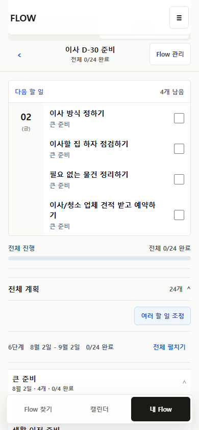

06.30 - 07.06
사용 화면을 정리하다
My Flow v2, 오늘 할 일 우선, 공개 Flow 저장 경로, Calendar schedule-first, 모바일 고정 UI와 카피를 반복 정리했다.
FlowMe Monthly Progress Review
지난 한 달 동안 FlowMe는 흩어진 PoC 화면에서 벗어나 찾기 → 저장 → 실행 → 캘린더 → 내보내기 → 다시 쓰기가 연결된 production 실행 셸로 이동했다. 동시에 콘텐츠·투영·협업 편집 연구도 구체적인 계약으로 발전했다.
진척이 없었던 달은 아니다. 다만 자동화 증거는 크게 쌓였고, 실제 사용자가 이해하고 반복 사용하는지는 아직 한 번도 관찰하지 못했다.
주간 커밋 수는 꾸준했지만 raw diff의 대부분은 문서·연구·QA 산출물이다. 따라서 커밋량만으로 “제품이 410번 좋아졌다”고 해석하면 안 된다.
기준: 2026-06-30 00:00 KST부터 2026-07-29 현재 HEAD까지의 Git activity. 날짜별 수치는 commit date 기준이며 merge·문서 커밋을 포함한다.
이 비율은 “문서 작업이 불필요했다”는 뜻이 아니다. 대규모 HTML, JSON, 스크린샷 evidence가 원시 줄 수를 크게 만든다는 뜻이다. 제품 진척 판단에는 아래의 배포 단위·행동 루프·미검증 항목을 함께 봐야 한다.
초반은 개별 화면 개선, 중반은 URL·콘텐츠·데이터 계약, 후반은 하나의 실행 여정과 production 안정화에 집중됐다.
My Flow v2, 오늘 할 일 우선, 공개 Flow 저장 경로, Calendar schedule-first, 모바일 고정 UI와 카피를 반복 정리했다.
URL hit/miss/candidate, draft 편집, source freshness gate, 민감 정보 경계, execution lifecycle을 구체화했다.
P24 관찰 준비가 readiness 문제로 연기된 뒤, P25·P26에서 whole-Flow 실행 공간과 구조 교정을 production에 올렸다.
P27~P35에서 lifecycle, mobile, focused workspace, canonical identity, CRUD, MECE UX를 연속 배포하고 owner review gate로 멈췄다.
릴리스 수가 많았던 만큼 UX 재작업도 많았다. 아래는 “기능 목록”이 아니라 각 프로그램이 해결하려던 사용자 문제의 변화다.
전체 Flow, 언제든 할 일, Calendar 배치, 되돌릴 수 있는 완료, 범위별 export를 한 공간에 연결.
발견부터 재사용까지 동일한 Flow 객체와 source/personal/run 경계를 유지하도록 구조 교정.
archive·restore, Item 제외, routine preview, library/search, Calendar 범위와 접근성을 production 기준으로 정리.
save-before, 공통 item role, routine 문법, My Flow rail/detail, 5개 실제 artifact shape를 재구성.
공개 Flow, receipt, My Flow, Calendar, export의 우선순위를 한 번 더 통일.
모바일 export 충돌, 키보드 순서, 50+ Calendar 범위, 긴 Flow 조정 등 검증 공백을 닫음.
Home/Find 역할, source-linked cards, 모바일 My Flow, Calendar bottom sheet, archive parity를 재정렬.
cross-Flow 목록과 한 Flow의 다음 행동·전체 계획·기록을 분리한 집중 실행 공간.
같은 이사 원문이 진입 경로마다 다른 Flow가 되던 문제를 24-item canonical Flow로 정렬.
archive, undo, restore, backup, archived-only delete와 source·개인·실행·발생 단위 명령을 분리.
상태 기반 진입, 3개 목적지, result-first public Flow, 날짜별 Todo, 인접 Flow workspace, scope-first export로 수렴.
P25 release 기준에서 P35 전수 기준까지 +168. 테스트 수 증가는 사용자 가치가 아니라 회귀 방지망의 확장을 뜻한다.
P35 전수 405개와 literal-route 보강 2개. 실제 사용자 관찰을 대신하지는 않는다.
P35 내부 게이트 화면은 날짜별 cross-Flow Todo와 Flow별 집중 실행을 분리한다. 아래 이미지는 production과 동일 계약을 검증한 자동 캡처이며 사용자 반응은 아니다.


최근 연구의 가장 큰 변화는 “좋아 보이는 사례”를 나열하는 대신 FlowMe에 적용할 것, 보류할 것, 검증할 것을 구조적으로 나누기 시작한 점이다.
FlowMe를 범용 planner가 아니라 외부 콘텐츠를 실행 가능한 artifact로 바꾸는 action compiler로 좁힘.
정리 완료여행·이사·학습·운동 등 vertical별로 원문 구조와 자연스러운 실행 목적지가 다르다는 점을 실제 서비스 단위로 비교.
근거 완료연구 결과를 decision matrix, scenario contract, team handoff로 전환하고 “실제 사용 unknown”을 별도 상태로 고정.
정리 완료일반 메모 입력 + 구조화 preview의 hybrid 방식을 선택. Obsidian 전체 복제가 아니라 가벼운 시작을 유지하는 방향.
구현 대기canonical Item과 Calendar/Todo/Sheet/Memo projection, Series·Edition·Occurrence의 시간 의미를 contract로 분리.
runtime 대기최근 후보 19개를 8차원으로 재평가. source trace, doneWhen, schedule, caution 연결의 공통 결함을 발견.
worktree 진행 중wiki식 작은 기여, GitHub식 검토된 canonical 변경, Figma/Notion식 개인 복사본, one-way projection을 hybrid로 제안.
owner 검토 대기기능보다 중요한 것은 무엇을 제품의 중심으로 보고, 어떤 증거가 없으면 아직 모른다고 말할지 명확해진 점이다.
SourceRow → Item → Step → Flow → Bundle/Map. 완료·결정·기록·보류를 독립적으로 가질 최소 단위는 Item이고, 나머지 artifact는 projection이다.
hit/miss 데모보다 원문 범위, 실행 완료 기준, 개인 일정, 주의 정보, 저장 이후의 실행 공간이 함께 있어야 실제 가치가 된다.
사용자는 메모장처럼 시작하고, FlowMe는 구조를 제안하되 원문을 숨기거나 전용 문법 학습을 요구하지 않는 hybrid가 현재 최선의 가설이다.
CI, build, Playwright, screenshot은 회귀·표현 오류를 잡는다. 사용자가 핵심 흐름을 이해하고 반복하는지는 observed session 없이는 unknown이다.
공개 Flow, My Flow, Calendar, export의 정보 위계가 P24~P35에서 여러 번 다시 설계됐다.
겉 화면은 반복됐지만 canonical identity, lifecycle, storage 경계, 회귀 테스트는 누적돼 같은 위치로 완전히 돌아가지는 않았다.
7월 초 broad polish에서 7월 말 literal route와 representative state 회귀처럼 한정된 검증으로 바뀌었다.
observed user가 0인 상태에서 내부 디자인 리뷰만 이어지면 다시 broad reset으로 돌아갈 위험이 있다.
“안 한 일”을 모두 같은 backlog로 두면 우선순위가 무너진다. 현재 결정, 다음 후보, 외부 증거가 필요한 일, 장기 비전을 분리해야 한다.
현재 공식 상태는 P35 production green이다. 새 프로그램을 자동으로 시작하는 것이 아니라 owner가 현재 경험을 보고 범위를 닫는 것이 다음 단계다.
핵심 질문은 “기능이 있나?”가 아니라 “URL/메모에서 시작해 저장한 Flow의 다음 행동을 바로 찾고, Calendar와 export까지 이해할 수 있나?”이다.
현재 repo·release history·dated evidence를 우선했다. 7월 29일 미커밋 연구는 현재 worktree 상태로만 표시했으며 배포 완료로 계산하지 않았다.